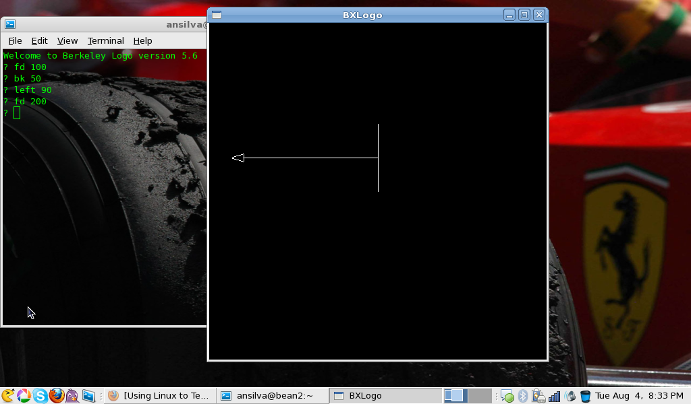

Using Linux to Teach Kids How to Program, 10 Years Later (Part I)
Exactly ten years ago, I was writing my very first article for the Linux Gazette. Back in 1999 I was a college student with some interest in education and a somewhat new Linux user. I wrote a short article about my own experience with the programming language Logo. In that article, I stated:
Today I am 21 years old, and I still like playing around with Logo. And I will use it to teach my son a little bit about programming and discrete math concepts.
Well, it's now 2009, and I am 31 years old. I have three kids, and I am teaching them some basic concepts in programming, geometry, and discrete mathematics with Logo. During the past ten years, much has changed. Linux has matured to levels where even Microsoft is contributing code to the kernel, and yet, Logo still remains mostly the same. In the original article I had to compile the interpreter from source, and I couldn't even get it working under certain versions of Red Hat Linux. I will use UCBLogo again in this article, but unlike then, UCBLogo logo is packaged and available under most of the major Linux distributions.
Installation:
On Fedora:
> yum install ucblogo
On Ubuntu:
> apt-get install ucblogo
The Basics:
To start up the interpreter, just open up a terminal and run:
> logo
And the interpreter prompt will look something like this:
Welcome to Berkeley Logo version 5.6 ?
Now, UCBLogo has a "programmable" cursor that draws on the screen whatever you tell it to do. That cursor is known as the turtle, which in some other versions of Logo is an actual icon of a turtle instead of a triangular cursor. It's with our turtle that I try to captivate my kids' imagination. The following are some basic commands that will let your kids 'tell' the turtle what to do and, at the same time, learn concepts in programming, geometry and Boolean logic amongst others.
Tell the turtle to go forward 100 pixels with:
? fd 100
Tell the turtle to go backward 50 pixels with:
? bk 50
You can tell the turtle to turn:
? left 90
or even:
? right 270
Where 90 and 270 is how many degrees the turtle should turn given the right or left command. Can you visualize the introduction to angles right here? In my case, I tried to illustrate the concept of an angle to my kids by using something they are quite familiar with: roller skating. They knew what a '360' was when someone roller skates, but I don't think they knew what that number meant. So, I used Logo's turtle to illustrate to them what angles are all about.
These four basic commands will allow your kids to draw quite a few things, but something will be missing. It would be nice if your kids could use some colors to make their drawings a bit more fun, and also how to tell the turtle to 'walk' without drawing. Here's how we do it:
To turn off the turtle's ability to draw, so we can move it around the canvas without leaving a trace behind it:
? penup
Now, you will be able to go forward or backward without tracing. When you are done moving it, turn it back on with:
? pendown
In UCBLogo, at least on Fedora, you have 16 different colors to play with. You can change the background color and the turtle's pen color. The colors are identified by a number between 0 and 15.
To change the background color:
? setbg 2
To change the turtle's pen color:
? setpencolor 15
When you are all done, you can clear the turtle's canvas with:
? cs
In Logo, you can always use the help command to see what commands are available for the interpreter, and find documentation on each of them. The output of the help command looks like this:
? help Help is available on the following: * cursor keyp poall setlibloc + define label pon setmargins - definedp labelsize pons setpalette .defmacro dequeue last pop setpen .eq difference left popl setpencolor .macro do.until lessequalp popls setpenpattern .maybeoutput do.while lessp pops setpensize --- more ---
And to get specific help on a given command, you use:
? help "left LEFT degrees LT degrees turns the turtle counter clockwise by the specified angle, measured in degrees (1/360 of a circle).
Note: You will need to use the double quote (") in front of any command you would like some help on.
Another helpful resource to prepare you to use Logo to teach your kids is the official manual, which I find myself going back to every once in a while as a good reference as I come up with ideas for problems which my kids will help me solve.
Next Month:
The title of this article was somewhat long, so you may not have noticed the 'PART I' tagged at the end of the string. Next month, I intend to write the second (and final) part. I will share with you how to teach the turtle new words (i.e. write your own functions/procedures), how to do some basic conditional statements, loops, code management so you can save your work, and even some recursion.
Finally, let me end by saying that your kids may not understand some of the concepts you are trying to show them right away, but the older they get the more these concepts will start sinking in. Hopefully one day they will grow to appreciate programming and maybe even want to become a programmer themselves.
Talkback: Discuss this article with The Answer Gang
![[BIO]](../gx/authors/silva.jpg)
Anderson Silva works as an IT Release Engineer at Red Hat, Inc. He holds a BS in Computer Science from Liberty University, a MS in Information Systems from the University of Maine. He is a Red Hat Certified Engineer, and has authored several Linux based articles for publications like: Linux Gazette, Revista do Linux, and Red Hat Magazine. Anderson has been married to his High School sweetheart for 11 years, and has 3 kids. When he is not working or writing, he enjoys spending time with his family, watching Formula 1 and Indycar races, and taking his boys karting.